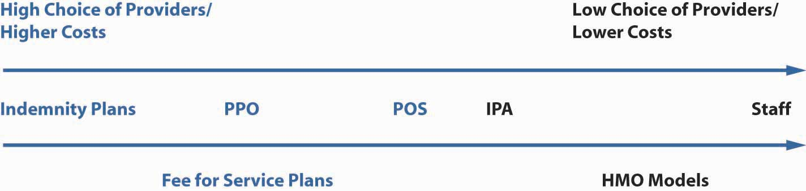
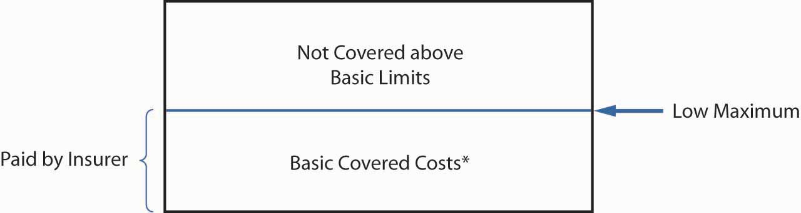
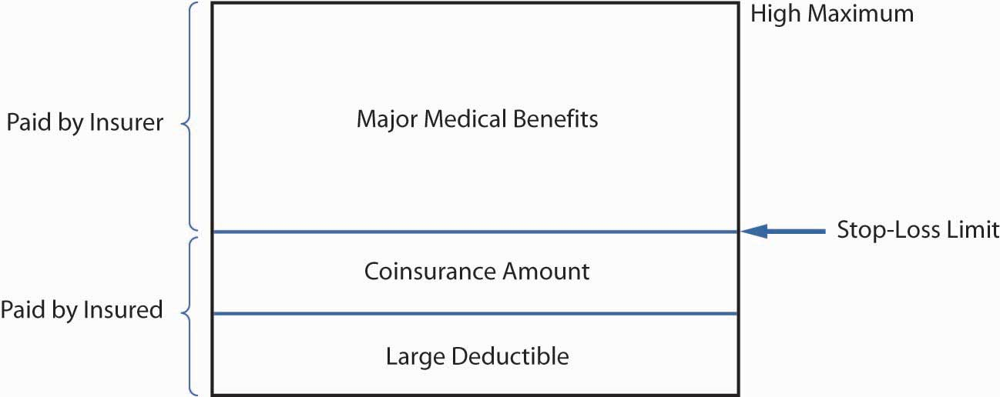

In this section we elaborate on the following topics regarding group health insurance plans:
Today, health insurance is very different from what it was two or three decades ago. Most of us do not pay providers of health care directly and submit an insurance form for reimbursement. In addition, most of us do not have complete freedom in choosing our physicians but must select from a list of in-network providers. The days of seeing any doctor and being reimbursed for any procedure the doctor orders are gone. We live in an era of receiving health care under managed care: controlled access to doctors, procedures, and medicines. While limited access is the disadvantage of the managed-care systems, there are many advantages. The most important is cost containment through efficiency. Another advantage is that most patients no longer have to deal with paperwork. Insureds simply make a copayment to the health care provider, and the remaining reimbursements are done behind the scenes. Additional advantages include preventive care and higher standards for quality care.
Costs are no longer controlled because the underlying issues that created medical cost inflation never disappeared. The main underlying factors are medical technology development, medical malpractice lawsuits, drug and medication development, the aging population, and the fact that a third party pays for the cost of obtaining medical services. People made the transition from the open choice of indemnity plans into the more controlled managed-care plans such as PPOs, point of service (POS) plans, and the various types of HMOs, but medical technology improvements, introduction of new medications, aging of the population, and medical malpractice continued in full swing. The cost-control factors of managed care that eased medical cost inflation during the transition period are not as effective as they once were. Once most of the U.S. population enrolled in managed-care plans, the cost saving factors no longer surpassed medical cost inflation factors. The situation in the health market is discussed in the box “What Is the Tradeoff between Health Care Costs and Benefits?”
The old managed-care plans are no longer viable and new ideas have emerged to supplement them. While the old systems are considered defined benefit health programs, the new ideas call for defined contribution health plans in which the consumer/employee receives a certain amount of money from the employer and then selects the desired health care components. Rather than employers negotiating with insurers or managed-care organizations for the group health plans, consumers are encouraged to negotiate directly with providers because these new plans are considered consumer-driven health plans. In some form, these are the HSAs and the HRAs.
Table 22.1 "Spectrum of Health Plans"Not all types of plans are included in the table. Exclusive physician organization (EPO) is another plan that does not permit access to providers outside the network. Also, HRA is not featured here. describes the managed health care plans prevalent in the marketplace today. Note, however, that the various health plans are no longer as distinct from one another as they appear in the table. Since these plans were introduced, changes in health care regulations, coupled with new laws concerned with patients’ rights, have eliminated some of the differences among the plans and they now overlap greatly. (For example, it is no longer true that HMOs are necessarily cheaper than PPOs and HMOs with open access.) Figure 22.2 "Continuum of Health Plans" provides the five most prevalent health insurance plans on a continuum of choice and cost. There are other health care plans, such as exclusive physician organizations (EPOs), where doctors have created their own networks in response to the competitive environment, specifically, hospital chains, medical centers, and insurance companies acquiring group practices. These networks do not provide access to out-of-network providers.
Table 22.1 Spectrum of Health Plans
| Indemnity | Indemnity with Network | PPO | POS | health savings accounts | HMO | |
|---|---|---|---|---|---|---|
| Choice Level | Highest | Lowest | ||||
| Cost Level | Highest | Lowest | ||||
| Main Characteristics | Comprehensive medical coverage with deductibles and coinsurance. Open access to providers. | Comprehensive medical coverage with deductibles and coinsurance. Access to providers in large networks and outside the network (with penalty). | Comprehensive medical coverage with deductibles, copayments, and coinsurance. Access to providers in networks and outside the network (with penalty). | Comprehensive medical coverage with deductibles, copayments, and coinsurance. Access to providers in networks and outside the network (with penalty). A gatekeeper. | Any type of health plan with a high deductible of at least $1,050 for a single individual and $2,100 for a family (in 2006). Rollover savings account with maximum of $2,700 for a single individual or $5,450 for a family—or up to the amount of the deductible (2006). Employer and employee contributions. | Comprehensive medical coverage with low copayments. Access to providers only in networks (except for emergencies). A gatekeeper. |
| Access to Providers | Access to any provider—no restriction. | Access to any provider in a large network and outside the network (with penalty). | Access to any provider in a large network and outside the network (with penalty). | Same as PPO, but required to see primary care physician (PCP) first. Referral from PCP to see a specialist. (PPO+PCP) | Depending on the underlying health plan | Staff model: facility only. Other models: in networks only, with PCP as a gatekeeper. |
| Methods of Reimbursing the Providers | Fee-for-service: patient pays total fee directly to the doctor for service rendered. | Fee-for-service, subject to usual, customary, and reasonable (UCR) limits. | Discounted fee-for-service. | PCPs by capitation; specialists by discounted FFS. | Depending on the underlying health plan after the high deductible. | Staff model: salaries. Other models: capitations. Individual practice association: capitation for PCP, discounted FFS for specialists. |
| What Is Required of the Patient? | Patient files claim forms; insurer reimburses coinsurance after the deductible, up to a maximum. | Same as indemnity, but reimbursement is only for UCR. | CopaymentsCopayments can run from $10 for PCP to $35+ for specialists. Each plan is negotiated, so copayments may differ. See examples later in this chapter. in networks; out of networks are similar to indemnity with penalties, up to a maximum. | Same as PPO. | Encourage participants to make more informed, cost-conscious decisions about their health care. Patient has to open a savings account, pay deductible and other coinsurance, and copays up to a maximum. | Copayment only; traditionally, no out-of-network reimbursement except for emergency care. |
| The Benefits—Levels of Preventive CareAll plans are required to provide preventive care such as mammography screenings and Pap tests. | Comprehensive medical package with minimal preventive care. | Comprehensive medical package with minimal preventive care. | Same as indemnity, with increased preventive care and well baby care. | Same as PPO. | Preventive care required by law is covered, as in other comprehensive plans (deductible does not apply). | Same as PPO with most preventive care, well-being, baby, physical exams, immunizations, extended dental, vision, and prescription plans.The distinction among the managed care plans—PPOs, POSs, and HMOs—has become more fuzzy in recent years because HMOs are required to provide emergency benefits outside the network and more choice. HMOs have begun unbundling the preventive care services and charge additional premiums for more benefits such as vision and dental care. |
| Prevalence | Lowest | Low | High | high | Growing (newest) | High |
Figure 22.2 Continuum of Health Plans
The student who is new to this topic might best comprehend the changes of the past three decades by first learning about the profiles of HMOs and the indemnity plans of the late 1970s and early 1980s. These two types of plans were truly far apart. Patients had unlimited provider choice in the indemnity plans and the least choice in the HMOs. The HMOs supplied a person’s medical needs for about $5 a visit. The subscriber to the staff model HMO would visit a clinic-like facility and see a doctor who was paid a salary. Baby, eye, and dental care were included. A new baby would cost a family very little. On the other side of the spectrum, the subscribers of the indemnity plans could see any provider, pay for the services, and later apply for reimbursement. The premiums for HMOs were substantially lower than those for the indemnity plan. In most cases, the employer paid the full premium for an HMO and asked the employee to supplement the higher cost of the indemnity plan.
Of these two extremes, who would select the HMO and who would select the indemnity plan? You answered correctly if you said that young and healthy employees most likely selected the HMOs. It turned out that there was adverse selection against the indemnity plans, which saw the more mature and less healthy employees. The managers of the indemnity plans began looking at the other extreme of the continuum for help in reducing costs. This is how managed care in traditional indemnity plans began. First, there were indemnity plans with large networks limiting access to providers and reimbursing only for usual, customary, and reasonable (UCR)The costs of health care services that insurers generally agree to cover in fee-for-service or managed care arrangements, based on studies of the appropriate cost for each medical procedure. costs for that area based on studies of the appropriate cost for each medical procedure. But this was only the first step. The low copayment (copay) that HMOs asked was very desirable. The newly formed preferred provider organizations (PPOs)Groups of hospitals, physicians, and other health care providers that contract with insurers, third-party administrators, or directly with employers to provide medical care to members of the contracting group(s) at discounted prices. adopted the copay method and used managed-care organizations to negotiate with doctors and all providers for large discounts, with some more than 50 percent off the usual, customary, and reasonable charges. The next step was to bring the gatekeeper, the primary care physician (which the HMOs used in most of their models and is discussed later in this chapter), into the structure of the PPO. When a gatekeeper was introduced, the new plan was called a point of service (POS)A preferred provider organization (PPO) that includes a primary care physician to serve as a gatekeeper, keeping costs contained. plan. This new plan is the PPO plus a gatekeeper, or the individual practice association (IPA) HMO model discussed later in the chapter.
The HMOs include various models: the model of one facility with doctors on staff (the staff model), the group model, the network model of doctors, and the individual practice association (IPA)HMO model where contractual arrangements are made with physicians and other providers in a community who practice out of their own offices and treat both HMO and non-HMO members. of many doctors in one practice. The doctors in an IPA could see HMO and non-HMO patients. In many cases, the POS and IPA are very similar from the point of view of the patients, except that when the POS is based on a preferred provider organization rather than an HMO, there is more access to out-of-network providers (but with penalties). These days, many IPAs allow some out-of-network access as well, especially in cases of emergencies. In both the PPO and IPA-based networks with a gatekeeper (POS), the provider specialists receive discounted fees for service, while the gatekeepers (primary care physicians) receive capitationAs in the case of managed care, a set amount paid to each health care provider based on the number of subscribers in the provider’s plan. (a set amount paid to each provider based on the number of subscribers in the plan). These are the areas where the distinctions among the plans become fuzzy. HMOs were forced to give more choices and services. Their subscribers, originally young, healthy employees, had become aging baby boomers who needed more quality care. Many states have passed bills requiring HMOs to loosen many of their restrictions. With all these changes came a price. HMOs became more expensive; with the best practices widely emulated, the offerings of all plans converged. The pendulum of choice versus cost has probably moved to be somewhere in the middle of the continuum shown in Figure 22.2 "Continuum of Health Plans". For learning purposes, this chapter will regard HMOs as the plans with minimal access to out-of-network providers. A comparison of the actual benefits under the various plans is available in the employee benefits portfolio in Case 2 of Chapter 23 "Cases in Holistic Risk Management".
Health care coverage costs are growing at a faster pace than almost any other segment of the economy. One of the nation’s largest benefits purchasing groups, the California Public Employee Retirement Systems, saw its PPO rates rise 20 percent and its HMO plans increase 26 percent. Many other employers saw similar increases. To balance their books, employers have to either pass these additional costs along to employees, find ways to cut benefits or transition into health savings accounts (HSAs).
HMOs were once seen as the saviors of the health insurance system. Offering lower costs, they often attracted younger, healthy workers. But now, as their costs are rising, even HMOs no longer look like good deals. Many of the benefits they once offered are being cut. For many older individuals, or those with greater health needs, HMOs do not provide the level of care and flexibility they desire. The PPOs they prefer, however, are becoming more and more expensive. And even with PPOs, benefits such as low copayments for drugs are now being reduced. With the creation of HSAs, it appears that the satisfaction level is lower than that of comprehensive health coverage. A survey conducted by the Employee Benefit Research Institute (EBRI) and discussed in its December 2005 conference revealed that patients who are using the consumer-driven health plans and high-deductible health plans, in the form of HSAs and HRAs, said that they (1) were less satisfied, (2) delayed seeing a health care provider, and (3) behaved in a more cost-conscious way.
At the same time, doctors are also feeling the pinch. Pressured by insurance companies to cut costs, they are forced to see more patients in less time, which can lead to medical mistakes. Insurance companies are also questioning expensive tests and medical procedures and refusing to pay doctors the full amount submitted. Soaring medical malpractice costs are causing some doctors to leave the profession. President George W. Bush called for tort reform to alleviate this problem during his State of the Union address on January 31, 2006.
In the United States, those individuals who have insurance, primarily through their employers, are the lucky ones. Some 47 million Americans have no insurance at all. Those who earn too much to qualify for Medicaid but not enough to purchase private health insurance often find themselves paying huge out-of-pocket bills. Often, uninsured patients neglect treatment until their condition becomes an emergency. When they cannot pay, hospitals and doctors pick up the cost, and they make up for it by increasing prices elsewhere, which contributes to escalating health care costs.
Is rationing health care the answer? Canada and many European countries have adopted systems of universal coverage, but such coverage comes with a price. Benefits, while universal, may be lower. It may be difficult to see specialists, especially about nonemergency conditions. Long waiting times are not uncommon. A universal health care system proposed during the first Clinton administration never got off the ground. Legislation aimed at giving patients a greater voice in determining what procedures health insurers would cover under a patients’ bill of rights did not materialize. However, the advent of HSAs is an attempt to allow patients to carefully choose their own coverage and allocate the appropriate costs.
In addition to the defined contribution health plans, some employers are looking to cut costs through disease management programs. With the majority of costs resulting from chronic conditions, such as asthma, diabetes, heart disease, and arthritis, human resource executives believe that they can reduce costs by developing better ways to manage the health care of employees with such conditions.
In an effort to alleviate the strain of unaffordable medical bills on the 48 million Americans without insurance, President Barack Obama brought renewed focus to the issue of health care reform throughout his 2008 presidential campaign. President Obama advocates universal health insurance and expressed his desire to see such a system implemented in the United States by the end of his four-year term. The Obama proposal emphasizes cost reductions to guarantee eligibility for affordable health care through measures such as insurance reform, abolishing patent protection on pharmaceuticals, and requiring that employers expand group coverage. A National Health Insurance Exchange would also be established for individuals not covered under employer arrangements, giving them access to plans pooled by private insurers and limited coverage through the government (in an arrangement similar to Medicare). Anyone, regardless of preexisting conditions, would have access to coverage at fixed premiums. Although more specific details have yet to emerge, President Obama says that this plan would reduce premiums by $2,500 for the typical family and would cost $60 billion to provide annually.
Critics contend that the Obama initiative would add a new government entitlement program whose funding, like Social Security and Medicare, would impose severe burdens because it does not resolve the fundamental issues responsible for escalating medical costs (discussed previously in this chapter). The eligibility requirements could also encourage adverse selection, leading to large deficits if an allowance for this is not built into the premiums. Employers might view the plan as a substitute for employee benefit options that they sponsor and a justification for discontinuing certain types of group coverage. Finally, nationalized health insurance risks alienating individuals who are content with their existing coverage and might resent having to finance a program they could not see themselves utilizing. This, of course, invites discussion about the merits of government intervention to such an extent in an individualistic society such as the United States. Still, the insurance industry finds the concept of cooperating with a national exchange preferable to the alternative of having to compete with a wholly public health insurance plan.
In his speech before a joint session of Congress on February 25, 2009, President Obama reiterated his position, stating, “Health care reform cannot wait, it must not wait, and it will not wait another year,” and he called for comprehensive reform efforts by the end of 2009. Shortly thereafter, the White House Forum on Health Reform was hosted on March 5. It presented findings from the group reports of over 30,000 participants in all 50 states who held HealthCare Community Discussions in December 2008. Once the forum had concluded, the Obama administration launched the Web site HealthReform.gov, detailing intended reform efforts. A preliminary health budget prepared by the Department of Health and Human Services was also made available on the site. Highlights of the budget include the following:
The interested student is invited to go to healthreform.gov for complete details of the health budget. Ongoing developments can be tracked at the interactive Web site, which also features the formal report from the HealthCare Community Discussions presented at the White House Forum and group reports from discussions in all states.
In March 2009, Senate Finance Committee chair Max Baucus (D-Mont.) published a white paper highlighting the proposals that have been floated since President Obama took office. A consensus is forming in terms of reform priorities: containing medical costs, decreasing the number of uninsured people, and producing better results for patients. Cost containment emphasizes better value for health care dollars—streamlined payment systems and elimination of redundancies. A greater insured population, it is reasoned, contributes to increased use of primary and preventive care so that people do not suffer severe, debilitating, and expensive-to-treat ailments by the time they seek medical intervention.
Lawmakers are focused on providing the best possible health care experience at the lowest possible cost. Such a balancing of the scales may not be possible, as pointed out by Congressional Budget Office (CBO) director Douglas Elmendorf. Elmendorf explained, “The available evidence suggests that a substantial share of spending on health care contributes little if anything to the overall health of the nation, but finding ways to reduce such spending without also affecting services that improve health will be difficult.” To reconcile this problem, the CBO director stressed changing the incentives within the current health care system, such as moving Medicare payments out of the fee-for-service realm, altering tax exclusions on employer-based coverage, and requiring greater transparency regarding the quality of services and treatments by care providers.
Despite the burdens of the economic recession, health reform has remained on the frontlines of President Obama’s first-term agenda. The stimulus authorized by the American Recovery and Reinvestment Act of 2009 (discussed in the box “Laws Affecting Health Care” in Chapter 20 "Employment-Based Risk Management (General)") included over $20 billion in health-related targeted spending consistent with recent reform measures. In February 2009, President Obama signed a bill expanding the State Children’s Health Insurance Program to guarantee coverage of 11 million children, at a cost of $33 billion. How these actions and proposals affect the quality of care remains to be seen, but Americans can certainly expect changes in the days, weeks, and months ahead.
Questions for Discussion
Sources: Lucette Lagnado, “Uninsured and Ill, a Woman Is Forced to Ration Her Care,” Wall Street Journal, November 12, 2002, A1; Allison Bell, “Group Health Rates Still Rocketing,” National Underwriter, Life & Health/Financial Services Edition, August 19, 2002; Lori Chordas, “Multiple-Choice Question: Disease Management, Cost Shifting and Prescription-Drug Initiatives Are Some of the Strategies Insurers Are Using to Stabilize Health-Care Expenses,” Best’s Review, August 2002; Barbara Martinez, “Insurer Software Shaves Bills, Leaves Doctors Feeling Frayed,” Wall Street Journal, July 31, 2002, A1; Frances X. Clines, “Insurance-Squeezed Doctors Folding Tents in West Virginia,” New York Times, June 13, 2002; Mary Suszynski, “Survey: HMO Rate Increases Are Highest in 11 Years,” Best Wire, July 2, 2002, http://www3.ambest.com/Frames/FrameServer.asp?AltSrc=23&Tab=1&Site=bestweekarticle&refnum=19513 (accessed April 22, 2009); “Dueling Legislation on Patients’ Rights in the House and Senate,” Washington Post, August 5, 2001, A5; Mark Hofmann, “Senators, White House Deadlock on Patient Rights,” Business Insurance, August 2, 2002; John A. MacDonald “Survey of Consumer-Driven Health Plans Raises Key Issues,” EBRI Notes 27, No. 2 (2006), http://www.ebri.org/publications/notes/index.cfm?fa=notesDisp&content_id=3618 (accessed April 22, 2009); President G. W. Bush, State of the Union address, January 31, 2006; Victoria Colliver, “McCain, Obama Agree: Health Care Needs Fixing,” San Francisco Chronicle, October 1, 2008, http://www.sfgate.com/cgi-bin/article.cgi?f=/c/a/2008/09/30/MNLG12Q79L.DTL, accessed March 4, 2009; Kevin Freking, “Coverage Guarantee Can Hit Young The Hardest: Obama Health Plan Follows Where Some States Have Struggled,” Associated Press, September 11, 2008, http://www.usatoday.com/news/politics/2008-09-11-2075765460_x.htm, accessed March 4, 2009; HealthReform.Gov, http://healthreform.gov/, accessed March 13, 2009; Department of Health and Human Services, Proposed Health Budget, http://www.whitehouse.gov/omb/assets/fy2010_new_era/Department_of_Health_and_Human_Services1.pdf, accessed March 13, 2009; Ruth Mantell, “Meaningful Health-Care Reform Getting Closer: Outline of Changes Likely to Be Enacted Begins to Take Shape,” Wall Street Journal (MarketWatch), March 16, 2009, http://www.marketwatch.com/news/story/story.aspx? guid=%7B6723EF15%2D7E92%2D4118%2D928A%2DF9FCA8DB592D%7D&siteid=djm_HAMWRSSObamaH, accessed March 17, 2009.
We will now give more detailed descriptions of the plans featured in Table 22.1 "Spectrum of Health Plans" and Figure 22.2 "Continuum of Health Plans". Following these descriptions, additional plans such as dental and long-term care plans will be discussed.
The traditional method for providing group medical expense benefits has been by paying health care providers a fee for services rendered. Health care providersInclude health professionals, such as physicians and surgeons, and health facilities, such as hospitals and outpatient surgery centers. include health professionals, such as physicians and surgeons, as well as health facilities, such as hospitals and outpatient surgery centers. Medical expense benefits may be provided on an indemnity, service, or valued basis.
Indemnity benefitsReimburse insureds for actual costs incurred for health care up to covered limits in traditional fee-for-service plans. apply the principle of indemnity by providing payment for loss. The insured (the covered employee or dependent) would receive, for example, the actual costs incurred up to but not exceeding $300 per day for up to ninety days while confined in a hospital. Other dollar limits would be placed on benefits for other types of charges, such as those for ancillary charges (such as X-ray, laboratory, and drugs) made by the hospital.
There are five major classifications of traditional fee-for-serviceMedical expense insurance providing hospital, surgical, and medical expenses, plus major medical and comprehensive coverage. medical expense insurance: (1) hospital expense, (2) surgical expense, (3) medical expense, (4) major medical, and (5) comprehensive medical insurance. The first three types are called basic coverage and provide a limited set of services or reimburse a limited dollar amount. As the names suggest, major medical and comprehensive medical insurance provide coverage for large losses.
Basic health care benefitsThe hospital, surgical, and medical expenses of a fee-for-service plan. cover hospital, surgical, and medical expenses. These coverages are limited in terms of the types of services (or expenditure reimbursements) they provide, as well as the dollar limits of protection. As Figure 22.3 "Basic Medical Coverage" shows, basic medical coverage generally provides first-dollar coverage instead of protection against large losses.
Figure 22.3 Basic Medical Coverage
* Basic coverage excludes some expenses, and some policies have a small deductible.
The basic hospital policyBasic health care benefit for room and board (for a specified number of days) and hospital ancillary charges, such as for X-ray imaging and laboratory tests. covers room and board (for a specified number of days) and hospital ancillary charges, such as those for X-ray imaging and laboratory tests. The basic hospital policy primarily provides benefits during a hospital confinement. In addition, it covers outpatient surgery and limited emergency care in case of an accident. Many policies have a small deductible. Ancillary charges may be covered on a schedule basis, or more commonly on a blanket basis for all X-rays, laboratory work, and other ancillary charges, with a maximum limit such as $5,000 for all such charges. Maternity coverage is included in group medical expense insurance policies because the Civil Rights Act forbids employer-sponsored health insurance plans from treating pregnancy differently from any other medical condition.
The basic surgical policyBasic health care benefit that usually pays providers according to a schedule of procedures, regardless of whether surgery is performed in a hospital or elsewhere. usually pays providers according to a schedule of procedures, regardless of whether the surgery is performed in a hospital or elsewhere. The policy lists the maximum benefit for each type of operation. A second approach sometimes used by insurers is to pay benefits up to the UCR surgical charges in the geographical region where the operation is performed. UCR charges are defined as those below the ninetieth percentile of charges by all surgeons in a geographical region for the same procedure.
A basic medical expense policyBasic health care benefit for all or part of doctors’ fees for hospital, office, or home visits due to nonsurgical care. covers all or part of doctors’ fees for hospital, office, or home visits due to nonsurgical care. Often a plan only provides benefits when the insured is confined to a hospital. Most policies have an overall limit of a daily rate multiplied by the number of days in the hospital. Common exclusions are routine examinations, eye examinations, X-rays, and prescription drugs.
Basic health care coverage has been criticized for encouraging treatment in the hospital, the most expensive site for medical care delivery. For example, both the basic hospital and medical policies cover services primarily delivered on an inpatient basis. Newer basic policies provide better coverage for outpatient services. For example, some provide X-ray and laboratory benefits on an outpatient basis (up to a small maximum benefit) and cover the cost of preadmission tests done on an outpatient basis prior to hospital admission.
The hospital, surgical, and medical expense insurance policies previously discussed are basic contracts in the sense that they provide for many of the medical expenses on a somewhat selective basis and with rather low limits. They are weak in the breadth of their coverage as well as their maximum benefit limits. Two health insurance plans have been developed to correct for these weaknesses: major medical insurance and comprehensive medical insurance.
Major medical insuranceCovers virtually all charges for hospitals, doctors, medicines, blood, wheelchairs, and other medically necessary items in a fee-for-service arrangement and has four fundamental features: high maximum limits (or no limits), a large deductible, coverage of a broad range of different medical services, and coinsurance provisions. covers the expense of almost all medical services prescribed by a doctor. It provides coverage for almost all charges for hospitals, doctors, medicines, blood, wheelchairs, and other medically necessary items. Major medical policies have four fundamental features: high maximum limits (such as $1 million) or no limits, a large deductible, coverage of a broad range of different medical services, and coinsurance provisions.
Maximum limitsIn major medical insurance, apply to the total amount the insurer will pay over the insured’s lifetime. apply to the total amount the insurer will pay over the insured’s lifetime. It may apply to each injury or illness separately, but it typically applies to all injuries and illnesses regardless of whether they are related.
Internal policy limitsIn major medical insurance, apply to specified services such as hospital room and board charges. often apply to specified services. Hospital room and board charges are usually limited to the hospital’s most prevalent semiprivate rate. All charges are subject to a usual and customary test.
As Figure 22.4 "Major Medical Insurance" shows, the deductible in policies is large, ranging from $300 to $2,000. The purpose of the deductible is to eliminate small claims and restrict benefits to the more financially burdensome expenses, thus making possible high limits and broad coverage at a reasonable premium rate. A new deductible must be satisfied each benefit periodTerm for which premiums, deductibles, copayments, and limits on insurance apply; in group insurance, usually a calendar year.. In group insurance, the benefit period is usually a calendar year. The deductible applies to each individual; however, many policies require only that two or three family members meet the deductible each year. This reduces the possibility of deductibles causing financial hardship when several family members have serious illnesses or injuries during the same year.
The coinsurance provisionGives the percentage of expenses the insurer will pay in excess of the deductible, usually between 70 and 90 percent. gives the percentage of expenses the insurer will pay in excess of the deductible. It may vary from 70 to 90 percent; 80 percent is common. The insured bears the remainder of the burden up to a stop-loss limitAmount above which an insured is no longer responsible for paying on a covered loss, regardless of any coinsurance provision., for example, $3,000, after which 100 percent of covered charges are reimbursed. Some group contracts include the deductible in the stop-loss limit and others do not. Figure 22.4 "Major Medical Insurance" shows the deductible included in the stop-loss limit.
Figure 22.4 Major Medical Insurance
Deductibles and coinsurance requirements are cost-sharingProvisions such as deductibles and coinsurance requirements that increase personal costs to insureds, reducing overall costs and moral hazard. provisions that increase the personal cost to the insured of using medical services. When insureds pay part of the cost, they tend to use fewer unnecessary or discretionary medical services. That is, deductibles and coinsurance provisions reduce moral hazard and help keep group insurance premiums affordable. The stop-loss limit protects the insured from excessive cost sharing, which could be financially devastating.
With major medical policies, the insurer pays most of the cost for medical services. However, major medical policy cost sharing may still be sizeable, putting a heavy financial burden on the insured. Comprehensive medical insuranceReduces financial burdens of major medical policies on insureds by providing smaller deductibles and broad coverages in a single policy. deals with this problem by providing smaller deductibles, typically $100 to $300 per individual per calendar year (see Figure 22.4 "Major Medical Insurance"). Comprehensive medical insurance is designed as a stand-alone policy that provides broad coverage for a range of in-patient and out-patient services. Except for the smaller deductible, the provisions of a comprehensive plan are usually the same as those in a major medical plan. The comprehensive policy is sold mainly on a group basis.
Many employees and their dependents are eligible for group medical expense coverage under more than one plan. For example, a husband and wife may each be eligible on their own employer’s plan as well as their spouse’s. Children may be eligible under both the father’s and the mother’s plans. Workers with more than one permanent part-time job may be eligible for coverage with more than one employer. Coordination is needed to prevent duplicate payment of medical expenses when employees or their dependents are covered under more than one group policy.
The coordination of benefits provisionEstablishes a system of primary and secondary insurers specifying the order and terms of payment when an insured has coverage under two separate insurance plans. establishes a system of primary and secondary insurers. The primary insurer pays the normal benefit amount, as if no other insurance were in force. Then the secondary insurer pays the balance of the covered health care expenses. The total payments by the primary and secondary insurers are limited to 100 percent of the covered charges for the applicable policies. Estimates are that coordination of benefits reduces the total cost of health insurance by over 10 percent by reducing duplicate payment.
An employee’s group plan is always considered primary for expenses incurred by the employee. For example, a husband’s primary coverage is with his employer, a wife’s with her employer, and each has secondary coverage through the spouse’s plan. When a child is insured under both parents’ plans, the policy of the parent whose birthday falls first in the year is the primary policy. However, in the case of separation or divorce, the primary coverage for the child is through the custodial parent. Secondary coverage is through stepparents, and coverage through the noncustodial parent pays last. In some cases, these rules may not establish a priority of payment, and then the policy in effect for the longest period of time is primary. Any group plan that does not include a coordination of benefits provision is considered the primary insurer by all insurers that have such provisions. This encourages almost universal use of the coordination of benefits provision.
Allowing insureds to be covered under more than one policy means that these insureds may not have to meet deductible or coinsurance requirements. However, group policies sometimes stipulate that the secondary payer cannot reimburse the deductible amounts required by the primary policy. This is designed to preserve the effect of the cost-sharing requirement, namely, to control the use of unnecessary or excess services by the insured and to reduce moral hazard.
Following is an example of a dependent insured who has double coverage. Sharon and John Shank are both covered by indemnity health plans under their respective employers. They also cover their three children. Sharon is born on October 1, 1970, and John on November 30, 1968. On January 3, 2009, their son, Josh, was hurt in a soccer tournament and had to have surgery on his ankle. The cost of the procedure was $5,000. John’s plan provides for a $250 deductible and 90 percent coinsurance, while Sharon’s plan has a $400 deductible with 80 percent coinsurance. Because Sharon’s birthday is earlier in the year, her insurer is the primary carrier. The reimbursement under her carrier is ($5,000 – $ 400) × −0.80 = $3,680. The out-of-pocket cost would be $1,320, but because the family is covered by both parents’ health plans, the amount will be covered in full under the plan of John’s employer. John’s employer, as a secondary payer, does not impose the deductibles and coinsurance. Note that if Sharon’s health plan were self-insured, her plan would not be the primary insurer, regardless of her birthday.
As noted above, escalating medical costs propelled high-cost plans to look for effective methods to control costs. These cost containment techniquesMethods of controlling costs in traditional fee-for-service policies through plan design, administration/funding, and utilization review. can be categorized as follows:
Plan design techniques relate to deductibles, coinsurance, limits on coverage, and exclusions such as experimental procedures or purely cosmetic surgeries. Most of the plans charge extra for coverage of routine eye examinations, eyeglasses, hearing examinations, and most dental expenses.
When employers decide to self-insure their employees’ group coverage, insurers continue to have an administrative role. The insurers enroll the employees, pay claims, and reinsure catastrophic claims. Through self-insurance, employers may be able to avoid state premium taxes (usually 1 or 2 percent of premiums) levied on insurance; eliminate most of the insurers’ potential profits; and, in some cases, earn higher investment returns on reserves for health claims than those normally earned by group insurers. In addition, self-insured plans do not have to comply with state laws mandating coverage of medical care benefits (e.g., alcoholism and infertility benefits). A small percentage of employers administer their plans themselves, eliminating any insurer involvement. The overall effect of these changes on the cost of health care can be characterized as significant in absolute dollar savings yet minor as a percentage of total costs.
Efforts to control costs include utilization review techniques developed by insurers and employers to reduce the use of the most costly forms of health care—hospitalization and surgery. Some of these techniques are listed in Table 22.2 "Health Care Cost Containment Methods". Most group plans use some or all of these methods to control costs. The first ten are discussed briefly in this section, and the others are described later in more detail.
Insurers will pay full coverage when the insured seeks a second surgical opinion before undergoing elective or nonemergency surgery and a lower percentage or no coverage if the insured proceeds with surgery after obtaining only one opinion. Second surgical opinions do not require that two surgeons agree that surgery needs to be done before the insurer will pay for the procedure. A second surgical opinion provisionRequires that an insured seeks a second opinion to increase information available before making a decision about whether to have the surgery; does not require that two surgeons agree as to the need for surgery. requires only that the insured get a second opinion to increase the information available before making a decision about whether to have the surgery.
Insurers encourage patients to use ambulatory surgical centers or have outpatient surgery at the hospital or surgeon’s office rather than opt for a hospital stay. The reimbursement rates also encourage preadmission testingDiagnostic tests done on an outpatient basis prior to a patient’s surgery to reduce the total time spent in the hospital., where patients have diagnostic tests done on an outpatient basis prior to surgery to reduce the total time spent in the hospital.
Table 22.2 Health Care Cost Containment Methods
|
Most group fee-for-service plans require preadmission certificationIn fee-for-service plans, requires the physician of the insured to contact the plan administrator for approval of hospital admission for a specified number of days. for hospitalization for any nonemergency condition. The insured or the physician of the insured contacts the plan administrator for approval for hospital admission for a specified number of days. The administrative review is usually made by a nurse or other health professional. The recommendations are based on practice patterns of physicians in the region, and an appeals process is available for patients with conditions that require admissions and lengths of stay outside the norm.
Extended care facilities or nursing facilities, hospice care for the dying, or home health care following hospital discharge may be recommended to reduce the length of hospitalization. Extended care facilitiesProvide basic medical care needed during some recoveries rather than the intensive and more expensive medical service of a hospital. provide basic medical care needed during some recoveries, rather than the intensive and more expensive medical service of a hospital. With hospice careArrangement where volunteers and family members help to care for a dying person in the hospital, at home, or in a dedicated hospice facility., volunteers and family members help to care for a dying person in the hospital, at home, or in a dedicated hospice facility. Home health careOrganized system of care at home that substitutes for hospital admission or allows early discharge from the hospital. is an organized system of care at home that substitutes for a hospital admission or allows early discharge from the hospital. The insurer covers the cost of physicians’ visits, nurses’ visits, respiratory therapy, prescription drugs, physical and speech therapy, home health aids, and other essentials. Cancer, diabetes, fractures, AIDS, heart ailments, and many other illnesses can be treated as effectively and less expensively with home health, hospice, and extended care.
Employers or their insurers often contract for reviews by an outside utilization review organization, sometimes called a professional review organization (PRO). Utilization review organizationsRun by physicians, surgeons, and nurses, offer peer judgments on whether hospital admission is necessary, whether the length of hospital stay is appropriate for the medical condition, and whether quality of care is commensurate with the patient’s needs., run by physicians, surgeons, and nurses, offer peer judgments on whether a hospital admission is necessary, whether the length of the hospital stay is appropriate for the medical condition, and whether the quality of care is commensurate with the patient’s needs. When problems are identified, the utilization review organization may contact the hospital administrator, the chief of the medical staff, or the personal physician. When treatment deviates substantially from the norm, the physician may be asked to discuss the case before a peer review panel. The medical insurance policy may refuse to pay for care considered unnecessary by the reviewing organization.
Utilization review organizations, third-party administrators, and many large employers collect and analyze data on health care claims. This statistical analysis of claimsHas the purpose of identifying any over utilization or excessive charges by providers of medical care. has the purpose of identifying any overutilization or excessive charges by providers of medical care. These studies usually establish standard costs for a variety of diagnostic-related groups (DRGs)A medical or surgical condition that recognizes age, sex, and other determinants of treatment costs.. Each DRG is a medical or surgical condition that recognizes age, sex, and other determinants of treatment costs. By looking at each provider’s charges on a DRG basis, the analyses can identify high- and low-cost providers.
Another cost containment technique using DRGs is prospective paymentPractice of paying a flat fee for patient care based on a patient’s DRG; provided an economic incentive to providers, specifically hospitals, to minimize length of stay and other cost parameters.. In 1983, the federal government adopted the practice of paying a flat fee for each Medicare patient based on the patient’s DRG. Prospective payment provided an economic incentive to providers, specifically hospitals, to minimize the length of stay and other cost parameters. Use of prospective payment proved effective, and other insurers and employers now use similar methods. But the downside is that the level of reimbursement is too low and many providers do not accept Medicare patients. Assignment of incorrect or multiple DRGs to obtain higher fees can be problematic, and monitoring is necessary to keep costs as low as possible.
Another cost containment initiative by employers has been to sponsor wellness programsDesigned to promote healthy lifestyles and reduce the incidence and severity of employee medical expenses. designed to promote healthy lifestyles and reduce the incidence and severity of employee medical expenses. The programs vary greatly in scope. Some are limited to educational sessions on good health habits and screening for high blood pressure, cholesterol, diabetes, cancer symptoms, and other treatable conditions. More extensive programs provide physical fitness gymnasiums for aerobic exercise such as biking, running, and walking. Counseling is available, usually on a confidential basis, as an aid in the management of stress, nutrition, alcoholism, or smoking.
The central concept in the area of health care cost containment is managed care. The concept of managed care has grown in the last fifteen to twenty years, and several characteristics are common across health care plans. Managed-careControlled access to doctors, procedures, and medicines through a variety of plans. plans control access to providers in various ways. Managed-care fee-for-service plans control access to procedures through provisions such as preadmission certification, PPOs control access by providing insureds with economic incentives to choose efficient providers, and HMOs control access by covering services only from HMO providers. Managed-care plans typically engage in utilization review, monitoring service usage and costs on a case-by-case basis. In addition, managed-care plans usually give economic incentives to stay in networks by charging penalties when nonpreferred providers are seen.
Preferred provider organizations (PPOs)Groups of hospitals, physicians, and other health care providers that contract with insurers, third-party administrators, or directly with employers to provide medical care to members of the contracting group(s) at discounted prices. were first formed in the 1980s as another approach to containing costs in group health insurance programs. PPOs are groups of hospitals, physicians, and other health care providers that contract with insurers, third-party administrators, or directly with employers to provide medical care to members of the contracting group(s) at discounted prices. They provide a mechanism for organizing, marketing, and managing fee-for-service medical care.
Unlike most HMOs, PPOs give employees and their dependents a broad choice of providers. The insured can go to any provider on an extensive list, known as the in-network list, supplied by the employer or insurer. The insured can also go to a provider not on the list, known as going out of network. If the insured goes to a preferred provider, most PPOs waive most or all of the coinsurance, which is a percentage of the fee paid to the doctor by the insurer. PPOs always charge a copay that can range from $10 to $30 or more depending on the specialty or the contract the employer negotiated with the insurance company. Providers such as doctors and hospitals are in abundant supply in most urban areas. Most operate on a fee-for-service basis and are concerned about competition from HMOs. To maintain their market share of patients, providers are willing to cooperate with PPOs. The income that they give up in price discounts they expect to gain through an increase in the number of patients. Employers and insurers like PPOs because they are not expensive to organize and they direct employees to low-cost providers. The primary incentives for employees to use preferred providers are being able to avoid deductibles and coinsurance provisions and only having to make copayments.
Cost effectiveness would not be achieved, even with discounts, if providers got insureds to accept more service(s) than necessary for the proper treatment of injury or illness. Therefore, many PPOs monitor their use of services.
Health maintenance organizations (HMOs)Provide a comprehensive range of medical services, including physicians, surgeons, hospitals, and other providers, emphasizing preventive care; either employs providers directly or sets up contracts with outside providers to care for subscribers. have been around for over sixty years. In the 1970s, they gained national attention for their potential to reduce health care costs.
The HMO concept is generally traced back to the Ross-Loos group, which was a temporary medical unit that provided medical services to Los Angeles construction workers building an aqueduct in a California desert in 1933. Henry J. Kaiser offered the same service to construction workers for the Grand Coulee Dam in the state of Washington. During World War II, what is now called the Kaiser Permanente plan was used for employees in Kaiser shipyards.Today, Kaiser Permanente is one of the largest HMOs in the United States, with operations scattered across the country.
The major turning point in popularity for HMOs occurred with the passage of the Health Maintenance Organization Act of 1973. This act required an employer to subscribe exclusively to an HMO or to make this form of health care available as one of the options to the employees, provided an HMO that qualified under the act was located nearby and requested consideration. By the time this requirement was retired, employers were in the habit of offering HMOs to their employees. Sponsors of HMOs include insurance companies, government units, Blue Cross Blue Shield, hospitals, medical schools, consumer groups, unions, and other organizations.
As noted above and featured in Table 22.1 "Spectrum of Health Plans", HMOs provide a comprehensive range of medical services, including physicians, surgeons, hospitals, and other providers, and emphasize preventive care. The HMO either employs providers directly or sets up contracts with outside providers to care for subscribers. Thus, the HMO both finances care (like an insurer) and provides care (unlike an insurer).
The scope of HMO coverage is broader than that of most fee-for-service plans. For example, HMOs cover routine checkups even when the employee is not ill. Copayments apply only to minor cost items, such as physician office visits and prescription drugs (e.g., a $10 copayment may be required for each of these services). The employee has lower cost-sharing requirements than with traditional fee-for-service plans.
Two basic types of HMOs are available. Some of the oldest and largest plans are the not-for-profit group practice associationNot-for-profit HMO model where physicians and other providers work for salaries or capitation. and the staff model. In this arrangement, HMO physicians and other providers work for salaries or capitation. In individual practice associations (IPAs)HMO model where contractual arrangements are made with physicians and other providers in a community who practice out of their own offices and treat both HMO and non-HMO members., which can be either for-profit or not-for-profit organizations, contractual arrangements are made with physicians and other providers in a community who practice out of their own offices and treat both HMO and non-HMO members. A physician selected as an HMO member’s primary physician is often paid a fixed fee per HMO member, known as capitation fee.An example of the calculation of capitation provided by the American Society of Dermatology is featured in “Develop a Realistic Capitation Rate” at the society’s Web site: http://www.asd.org/realrate.html. When a physician is paid by salary or per patient, the primary physician acts as a gatekeeper between the patient and specialists, hospitals, and other providers. The group association, the staff model, and the individual practice association all pay for and refer subscribers to specialists when they consider this necessary. However, if the HMO subscriber sees a specialist without a referral from the HMO, the subscriber is responsible for paying the specialist for the full cost of care. HMOs either own their own hospitals or contract with outside hospitals to serve subscribers.
Because HMO providers receive an essentially fixed annual income and promise to provide all the care the subscriber needs (with a few exclusions), they are financially at risk. If the HMO providers overtreat subscribers, they lose money. Consequently, no economic incentive exists to have subscribers return for unnecessary visits, to enter the hospital if treatment can be done in an ambulatory setting, or to undergo surgery that is unlikely to improve quality of life. This is the key aspect of an HMO that is supposed to increase efficiency relative to traditional fee-for-service plans.
A major criticism of HMOs is the limited choice of providers for subscribers. The number of physicians, hospitals, and other providers in the HMO may be quite small compared with group, staff, and individual practice models. Some individual practice plans overcome the criticism by enrolling almost every physician and hospital in a geographic region and then paying providers on a fee-for-service basis. Paying on a fee-for-service basis, however, may destroy the main mechanism that helps HMOs control costs. Another concern expressed by critics is that HMOs do not have proper incentives to provide high-quality care. A disadvantage for many of the baby boomers is the inability to seek the best health care possible. As noted in the Links section of this chapter, health care is a social commodity. Every person believes that he or she deserves the best health care. Thus, if M.D. Anderson in Houston, Texas, were the best place to receive cancer treatment, everyone would want to go to Houston for such treatment. Under HMOs, there would not be any reimbursement for this selection. Under a PPO or POS plan, the insured may use the out-of-network option and pay more, but at least he or she would receive some reimbursement. However, a recent national survey of 1,000 insureds under age sixty-five revealed that customer dissatisfaction with HMOs is lessening.“HMOs Tightening Consumer Satisfaction Gap: Survey,” National Underwriter Online News Service, July 15, 2002. The explanation may be the narrowing gap in services and access to out-of-network providers that has resulted from an increased concern for patient rights, such as the 2002 Supreme Court decision that allows the states to challenge HMOs’ treatment decisions.Robert S. Greenberger, Sarah Lueck, and Rhonda L. Rundle, “Supreme Court Rules Against HMOs on Paying for Rejected Treatments,” Wall Street Journal, June 21, 2002. Many states have subsequently created independent boards to review coverage decisions.Steven Brostoff, “High Court Upholds States’ HMO Rules,” National Underwriter Online News Service, June 20, 2002.
Health savings accounts (HSAs)Designed to help individuals save for future qualified medical and retiree health expenses on a tax-free basis by providing participants in high deductible health plans with personal accounts funded by employer or employee contributions with before-tax dollars to put toward out-of-pocket medical expenses. were created by the Medicare bill signed by President Bush on December 8, 2003, and are designed to help individuals save for future qualified medical and retiree health expenses on a tax-free basis. HSAs are modeled after the medical savings accounts (MSAs)Allowed limited contributions from employers and employees of small businesses and self-employed persons to help cover out-of-pocket medical expenses.. MSAs were used for small employers and the self-employed only and were not available to individuals or large employers. Employers or employees could contribute to the MSA but in limited amounts relative to HSAs. The annual insurance deductible for MSAs ranged from $1,650 to $2,500 for individuals, of which no more than 65 percent could be deposited into an MSA account. The range for families was $3,300 to $4,950, of which no more than 75 percent could be deposited in an MSA.
The Treasury Department created a document explaining the features of HSAs, some of which are described here. An HSA is owned by an individual, and contributions to the account are made to pay for current and future medical expenses. The most important requirement is that an HSA account can be opened only in conjunction with a high-deductible health plan (HDHP)Any health insurance plan that requires deductibles up to the amounts established by the IRS annually., as was the case with MSAs. Only preventive care procedures are not subject to the high deductible. The HSA can be part of an HMO, PPO, or indemnity plan, as long as it has a high deductible. Eligibility is for individuals who are not covered under other comprehensive health plans or Medicare. Children cannot establish their own HSAs, and there are no income limits to open an account. Contributions to the account are made on a pretax basis, and the monies are rolled over from year to year, unlike the flexible spending account explained in Chapter 20 "Employment-Based Risk Management (General)". Health coverages that are eligible for HSAs include specific disease or illness insurance; accident, disability, dental care, vision care, and long-term care insurance; employee assistance programs; disease management or wellness programs; and drug discount cards.
In 2009, a high-deductible plan that qualifies for the HSA is a plan with a $1,050 deductible for a single person and a $2,300 deductible for a family. The maximum allowed out-of-pocket expense, including deductibles and copayments, cannot exceed $5,800 for single person coverage and $11,600 for family coverage. These amounts are indexed annually for inflation.Internal Revenue Service (IRS), “Health Savings Accounts and Other Tax-Favored Health Plans,” Publication 969 (2008), http://www.irs.gov/publications/p969/ar02.html#en_US_publink100038739 (accessed April 22, 2009). The benefits are designed with limits. Not all expenses are added toward the out-of-pocket maximum. For example, the extra cost of using providers who charge more than the usual, customary, and reasonable (UCR) amounts is not included in the maximum annual out-of-pocket expense. Preventive care is paid from first dollar and includes the required copayment. If the individual goes out of the network, out-of-pocket expenses can be higher because the limits apply to in-networks costs. Deductibles apply to all plan benefits, including prescription drugs.
Contribution to an HSA can be made by the employer or the individual, or both. If made by the employer, the contribution is not taxable to the employee. If it is made by the individual, it is a before-tax contribution. Maximum amounts that can be contributed in 2009 are $3,000 for single individuals and $5,950 for families or up to the deductible level. The amounts are indexed annually. For individuals age fifty-five and older, additional catch-up contributions are allowed (up to $1,000 in 2009).Internal Revenue Service (IRS), “Health Savings Accounts and Other Tax-Favored Health Plans,” Publication 969 (2008), http://www.irs.gov/publications/p969/ar02.html#en_US_publink100038739 (accessed April 22, 2009). Contributions must stop once an individual is enrolled in Medicare. Any amounts contributed to the HSA in excess of the contribution limits must be withdrawn or be subject to an excise tax.
HSA distributions are tax-free if they are taken for qualified medical expenses, which include over-the-counter drugs. Tax-free distributions can be taken for qualified medical expenses of people covered by the high deductible, the spouse of the individual, and any dependent of the individual (even if not covered by the HDHP). If the distribution is not used for qualified medical expenses, the amount of the distribution is included in income and there is a 10 percent additional tax, except when taken after the individual dies, becomes disabled, or reaches age sixty-five. Distributions can be used for COBRA continuation coverage (discussed in Chapter 20 "Employment-Based Risk Management (General)"), any health plan coverage while receiving unemployment compensation, and for individuals enrolled in Medicare who encounter out-of-pocket expenses. It can also be used for the employee share of premiums for employer-based coverage but not for Medigap premiums (discussed later in this chapter). HSA distributions can be used for qualified long-term care insurance (see later in this chapter) and to reimburse expenses in prior years.
HSAs are owned by the individual (not the employer), and the individual decides whether he or she should contribute, how much to contribute, and how much to use for medical expenses. The employer has no right to restrict the employee or not allow rollover from year to year. The money is to be put in accounts with an HSA custodian or trustee. The custodian or trustee can be a bank, credit union, insurance company, or entity already approved by the IRS to be an IRA or an MSA trustee or custodian. Trustee or custodian fees can be paid from the assets in the HSA without being subject to tax or penalty, and the HSA trustee must report all distributions annually to the individual (Form 1099 SA). The trustee is not required to determine whether distributions are used for medical purposes.
HSAs are not “use it or lose it,” like flexible spending arrangements (FSAs). All amounts in the HSA are fully vested (see Chapter 21 "Employment-Based and Individual Longevity Risk Management"), and unspent balances in an account remain in the account until they are spent. The objective of the HSAs is to encourage account holders to spend their funds more wisely on their medical care and to shop around for the best value for their health care dollars. The idea is to allow the accounts to grow like IRAs (see Chapter 21 "Employment-Based and Individual Longevity Risk Management"). Rollovers from HSAs are permitted, but only once per year and within sixty days of termination from the plan.
A survey by the Employee Benefit Research Institute (EBRI; featured in the box “What Is the Tradeoff between Health Care Costs and Benefits?”) pointed out that owners of HSAs are less satisfied than those in comprehensive health care plans. They also found that the owners delay seeking care and are making cost-conscious decisions as intended, but lack of information makes those decisions very difficult.
The Wall Street Journal reported in its February 2, 2006, issue that many large employers are adopting the HSAs for their employees. They regard it as giving the employees an opportunity to open a tax-free account. Among the companies that offer HSAs to their U.S. workers are Microsoft Corporation, Fujitsu Ltd., Nokia Inc., General Motors Corporation, and DaimlerChrysler.Sarah Rubenstein, “Is an HSA Right for You? President Proposes Sweetening Tax Incentives As More Companies Offer Latest Health Benefit,” Wall Street Journal Online, February 2, 2006, http://online.wsj.com/public/article/SB113884412224162775-jMcNHLtKsbwT1_WhQ90yKd2FDfg_20070201.html?mod=rss_free (accessed April 22, 2009). Most major banks offer HSA services.
The move to consumer-driven health care plans described in “What Is the Tradeoff between Health Care Costs and Benefits?” includes another plan that can be provided by the employer only. This plan is also a defined contribution health program accompanied by a high-deductible plan. It is the health reimbursement arrangement (HRA)Plan similar to the Health Savings Account (HSA), with the distinction that the employer controls plan contributions. in which employees use the accounts to pay their medical expenses or COBRA premium, and they have their choice of health care providers. Under the IRS ruling, accounts funded completely by the employer are not taxable to the employees and can be carried over from year to year. At the time, this IRS ruling was considered an important step toward creating the innovative ideas of defined contribution health plans.“Hewitt Praises New IRS Health Account Rules,” National Underwriter Online News Service, July 2, 2002. The IRS has posted more information about the HRA guidelines on the Internet at http://www.ustreas.gov/press/releases/po3204.htm.
As noted, HRA plans are funded by the employer with nontaxable funds. While these funds can be rolled over from year to year, the amount of carryover and the way in which the plan operates is determined by the employer. This is the exact opposite of what happens with HSAs. Because the funds are the employer’s, any amount in an HRA usually reverts back to an employer if the employee leaves the company, although employers may fold HRA funds into a retiree benefit program. HRA funds cannot be used to pay for health insurance premiums pretaxed though a cafeteria plan (as described in Chapter 20 "Employment-Based Risk Management (General)"). The only exceptions to this rule are that COBRA premiums or premiums for long-term care can be paid for from an HRA.
In this section you studied the evolution of group health insurance and the components of different group plans:
Basic coverages of fee-for-service plans include the following:
Additions to basic coverages in fee-for-service plans are the following:
Managed-care plans control access to providers as a way to deal with escalating costs in the traditional fee-for-service system.
Jenkins Real Estate provides its employees with three health plan options:
Which plan do you think the following employees would chose? Why?